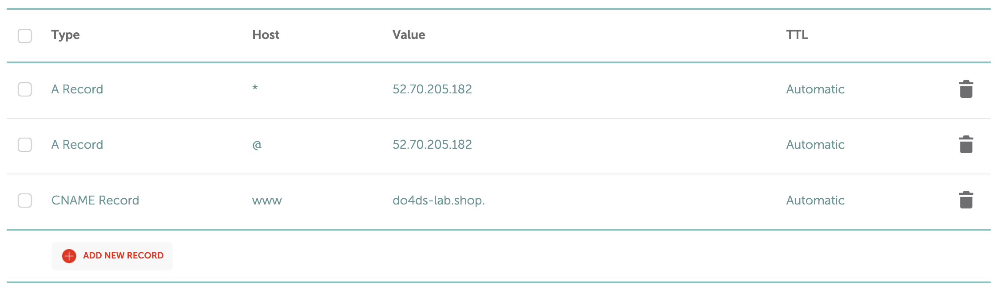

13 DNS allows for human-readable addresses
In Chapter 12 you learned all about how IP addresses are where a resource lives on a computer network. But you’ve been using the internet for a long time and you’ve rarely – if ever – actually used an IP address. What gives?
IP addresses are hard to remember. And worse, they can change when servers are replaced or changed.
To make the internet a little more human-friendly, the creators of the internet built the domain name system (DNS) that translates between human-readable domains and the IP addresses where the resources actually live.
When you create or launch a website, you’ll purchase domain like \(do4ds.com\). Purchasing a domain (renting one, really) gives you the right to attach that domain to an IP address so people can access the resources you choose at that address.
Chapter 12 introduced full URLs. Where the main address goes, I handwaved a little because I was switching back and forth between IP addresses and domains. In this chapter, we’re going to get really specific about how that substitution works, so we’re going to focus on the address part of it. In particular, we’re going to learn about Fully-Qualified Domain Names (FQDN).
A site’s FQDN looks like this:
\[ \overbrace{https}^{\text{protocol}}://\overbrace{blog}^{\text{Subdomain}}.\underbrace{\overbrace{example}^{\text{Domain Name}}.\overbrace{com}^{\text{Top-Level Domain}}}_{\text{Root Domain}} \]
The root domain is the thing you actually purchase. It has two parts. The top-level domain specifies the root domain name server to use.
Each domain name is unique only within the top-level domain, so if you own the root domain \(example.com\), there’s nothing stopping someone else from getting \(example.org\) or \(example.ai\).
If you feel like the number of top-level domains has exploded in the last few years, you’re right.
When the web first launched, there were only a limited number of top-level domains like .com, .org, and .net and ICANN – the group that controls how domains are assigned – controlled them all.
In 2013, ICANN decided to allow people and organizations to register their own top-level domains. That’s why there’s been an explosion in websites at top level domains like .io, .ai, and .fun in the last decade or so.
I think it’d be fun to have my own top-level domain, so it’s unfortunate that owning a top-level domain is not something to do on a whim. In 2012, the initial application fee was $185,000.
The protocol is the application layer protocol, which we discussed in some depth in Chapter 12. For most web traffic, the protocol is http. We’ll discuss where the s comes from in Chapter 14 on SSL.
Subdomains are a way to specify a part of a domain, usually to signify to users that its for a distinct purpose. If you control a domain, you also have ownership over all the subdomains in that domain.
Subdomains are entirely about organizing how users experience your website. They don’t need to have any relationship to the technical implementation of your website. For example, you might want to have a blog for your engineering team at \(example.com\). Whether you choose to host it at \(example.com/engineering/blog\) or at \(blog.engineering.example.com\) is purely a choice of user experience and organizational preference.
Poking around different Google services illustrates the arbitrary-ness of using subdomains vs paths. Some Google services are at subdomains. Gmail is at \(mail.google.com\) and Google Drive is at \(drive.google.com\). Each of these is a distinct site I might visit for different purposes, but they’re all owned and maintained by Google – though probably by different teams.
On the other hand, Google Maps is accessible at \(maps.google.com\), but it just redirects to \(google.com/maps\). Google slides is also accessible at \(slides.google.com\) and redirects to a path on a subdomain: \(docs.google.com/presentation\). This most likely reflects internal organizational divisions at Google.
www is just a subdomain
Sometimes the domains of websites are prefixed with www and sometimes not. What gives?
www is just a subdomain. It’s short for world wide web.
When the internet was first started, it seemed like it might be important to differentiate the subdomain where the website would live from, for example, the email domain people at that organization would use.
That turned out not really to be the case.
These days, it is convention to make the www subdomain and the bare domain go to the same place.
13.1 How DNS lookups work
In Chapter 12, we discussed how packets gets routed to successively higher-level routers until there’s one that knows where the packet is going and sends it back down. It turns out that this process essentially happens twice. The first time is to get the IP address for the domain in a process called DNS resolution. The second time is when it actually sends the information to that IP address.
You can see the basic structure of a DNS lookup using the terminal command nslookup. Here’s the DNS routing for \(google.com\):
❯ nslookup google.com
Server: 192.168.86.1
Address: 192.168.86.1#53
Non-authoritative answer:
Name: google.com
Address: 142.251.163.113
Name: google.com
Address: 142.251.163.100
Name: google.com
Address: 142.251.163.138
Name: google.com
Address: 142.251.163.101
Name: google.com
Address: 142.251.163.102
Name: google.com
Address: 142.251.163.139These addresses do change periodically, so they may no longer be valid by the time you read this. But if you want to go do an nslookup yourself, you can visit one of those IP addresses and see that it takes you right to the familiar \(google.com\).1
DNS resolution is actually quite a complex process because every computer in the world needs to be able to resolve a DNS entry to the same IP address in a timely fashion. The simplest form of DNS lookup would be easy – there would just be one nameserver with the top-level domains and then one server for each top-level domain.
There are two problems with this theoretical DNS lookup – it wouldn’t be very resilient because of a lack of redundancy and it would be slow. In order to speed things up, the DNS system is highly decentralized.
Along with decentralization, DNS resolution relies on a lot of cacheing. When your computer or an intermediate DNS server looks up an IP address for you, it caches it. This is because its likely that if you’ve looked up a domain once, you’re going to do it again soon.
This is great if you are using the internet and don’t want to wait for DNS lookups, but when you’re changing the domains on servers you control, there are thousands of public DNS servers that a request could get routed to, and many of them may have outdated cache entries. DNS changes can take up to 24 hours to propagate.
That means that if you make a change and it’s not working, you have no idea whether you made a mistake or it just hasn’t propagated yet. It’s very annoying.
Sometimes, using a private browsing window will cause DNS cache refreshes, but not always.
13.2 How DNS is configured
From the perspective of someone trying to set up their own website, there’s only one DNS server that matters to you personally – the DNS server for your domain name registrar.
Domain name registrars are the companies that actually own domains. You can buy or rent one from them in order to have a domain on the internet.
Your first stop would be a domain name registrar where you’d find an available domain you like and pull out your credit card.
Costs for domain names vary widely. Buying a meaningless domain in a less popular top-level domain, say ladskfmlsdf.me can cost as little as $3 per year. On the other hand, buying a .com domain that’s a real word or phrase can be a few thousand dollars. There are articles every few years about some major company accidentally allowing their domain name to lapse and ransoming it back for stupid amounts of money.
Configuration of DNS is done by way of records, of which there are a menagerie of types you can configure. Luckily, most simple configurations only need CNAME and A records.
Here’s an imaginary DNS record table for the domain example.com:
| Path/Host | Type | Target |
|---|---|---|
@ |
A | 143.122.8.32 |
www |
CNAME | example.com |
* |
A | 143.122.8.33 |
Let’s go through how to read this table.
Since we’re configuring example.com, the paths/hosts in this table are relative to example.com.
In the first row we’re configuring an A record to go to the target IP address. A records (or their IPv6 cousin AAAA records) map a domain to an actual IP address. The path @ is a special symbol meaning exact match. So by this configuration, any traffic to example.com will be passed straight through to the specified IP address.
The second row deals with traffic to the www subdomain. CNAME records alias sub-domains. They’re most frequently used to map sub-domains to the main domain. Since this is a CNAME record for example.com, this record indicates that traffic to www.example.com should be treated exactly like traffic to example.com. Some domain providers do automatic redirection of www traffic, and so this row may not be necessary in some configurations.
The last record uses the wildcard symbol * to send all subdomain traffic that’s not already spoken for – say blog.example.com or info.example.com directly to the IP address specified. In this case, I’m sending all of those subdomains to a different IP address, maybe a 404 (not found) page – or maybe I’m serving all the subdomains off a different server.
So what happens is that your query goes through several layers of public DNS servers to get to the DNS entry for your domain name registrar. In many cases, you’ll directly configure your domain name registrar to point to your website or server – but you also can configure the domain name registrar to point at another set of DNS servers you actually control with an NS record.
If you’re setting up your own server, this probably isn’t the case, but some large enterprises do run their own private DNS servers.
13.3 Comprehension Questions
TODO
13.4 Lab: Configuring DNS for your server
In the last lab, we configured the server so that all of the services were served off of one single port that redirected to various subpaths.
Now we want to get a real URL for the server so that you don’t have to remember some random ec2- URL for your server. In this lab, we’ll configure DNS records for our server so it’s available at a real URL.
13.4.1 Step 1: Allocate Elastic IP
EC2 instances get assigned a public IP when they are started. That’s great – it makes it easy to do the kind of work we’ve done. But if you’ve stopped or restarted your server, you’ve you’ve probably noticed that the public IP address changed!
This is no good for configuring a long-lived DNS record that consistently routes to your server. So we’re going to use AWS’s Elastic IP service, which gives you a stable public IP address you can keep and move around from one instance to another as you wish.
Elastic IP payment is a little weird. You don’t get charged for Elastic IPs as long as you’re using them. So if your server is up and using an elastic IP, it’s all free. If you take your server down and want to reserve the Elastic IP so it’s the same when you bring it back up, you’ll pay. It’s very cheap for one IP (12 cents per day as of this writing), so don’t worry about it.
Basically AWS doesn’t want you hoarding Elastic IPs. Great – just make sure to give back the elastic IP if you take down your instance permanently.
The labs in this book are ordered to promote learning.
If you configure a server later for real, I’d recommend setting up an Elastic IP as soon as you bring the server up so you have a permanent IP address right off the bat.
To actually do it, find Elastic IP in the AWS console and allocate an address. Once it has been allocated, click through to the elastic IP and associate it with the default private IP address for your instance.
Note that once you make this change, your server will no longer be available at its old IP address, so you’ll have to SSH in at the new one. If you have SSH terminals open when you make the change, they will break.
13.4.2 Step 2: Buy a domain
You can buy a domain from any of the many domain purchasing services on the web. Now, it won’t be free, but many domains are very cheap.
The easiest place to buy a domain is via AWS’s Route53 service. You can get domains on Route53 for as little as $9 per year – but there are even cheaper services. For example, I was able to get the domain \(do4ds-lab.shop\) for $1.98 for a year on namecheap.com, which has long been my choice for purchasing domains because it is indeed, cheap.
13.4.3 Step 3: Configure DNS
Once you’ve got your domain, you have to configure your DNS. You’ll have to create 2 A records – one each for the @ host and the * host pointing to your IP and one for the CNAME at the www with the value being your bare domain.
Exactly how you configure this will depend on the domain name provider you choose.
In NameCheap, my Advanced DNS configuration looks like this:

13.4.4 Step 4: Wait an annoyingly long time
Now you just have to be patient. Unfortunately DNS takes time to propagate. After a few minutes (or hours?), your server should be reachable at your domain.
If it’s not (yet) reachable, try seeing if an incognito browser works. If it doesn’t, wait some more. When you run out of patience, try reconfiguring everything and check if it works now.
Note that we still haven’t configured SSL, so you’ll need to make sure to correct your browser away from the https URL.
If you try to do an
nslookupon some websites – like \(do4ds.com\), you’ll notice the IP address doesn’t actually take you to this book’s site. That’s because this book isn’t actually hosted directly on a server. It’s instead hosted on GitHub pages – so the IP addressesnslookupfinds are the Google Pages servers, which themselves know how to resolve \(do4ds.com\).↩︎